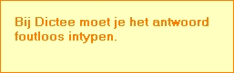
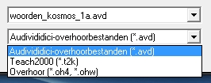
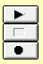
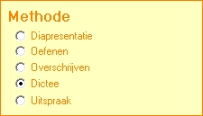
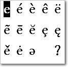
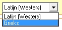
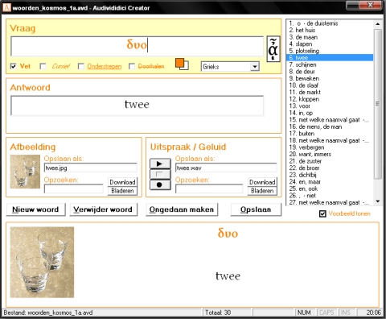

Makkelijk te leren
Een van de belangrijkste aspecten bij het ontwerpen van Audivididici was voor ons de gebruiksvriendelijkheid.

Het programma is duidelijk van opzet en intuïtief in het gebruik.
Een voorbeeld is dat een functie kort wordt uitgelegd wanneer u er op klikt.
Probleemloos overstappen
Voor wie een ander populair overhoorprogramma gebruikt, zoals Overhoor of Teach2000, is het overstappen in een handomdraai gebeurd.
Bestanden die met deze programma's zijn gemaakt zijn direct te openen in Audivididici.
U kunt er zelfs voor kiezen om alle bestanden in één keer om te zetten.


Rechtstreeks inspreken
Als u een microfoon heeft aangesloten op de computer, kunt u rechtstreeks opnemen.
Zo kunt u bijvoorbeeld woorden inspreken.
Ook kunt u andere geluiden opnemen waardoor een woord beter te onthouden is.
Laat uw fantasie de vrije loop
Niet alleen talen zijn in te voeren!
Benoem bijvoorbeeld delen van het lichaam met biologie, of de verschillende glaswerken met scheikunde.
Wees creatief en benut Audivididici tot het uiterste.
Krachtig voor gevorderden
Er zijn vele overhoormogelijkheden beschikbaar om woorden en grammatica te leren en uiteindelijk te toetsen.

Zo is het bij “
Oefenen” de bedoeling dat u het antwoord in gedachten neemt, en vervolgens zelf aangeeft of u het goed of fout had.
“
Dictee” is strenger: u moet het antwoord intypen zonder spelfouten.
Bovendien zijn de afbeeldingen en geluiden uit te schakelen voor het voorbereiden op een toets.

Het puntje op de i
Accenten en andere tekens zijn zo geplaatst.
Via een handig menu zijn de gekste letters te selecteren.
Voor de gevorderde gebruiker is dit menu ook via het toetsenbord eenvoudig aan te spreken.
Zo zijn woorden allerlei tallen, zelfs met de vreemdste tekens, in een handomdraai ingevoerd.
Voor vrijwel alles geschikt
Audivididici is geschikt voor Westerse talen.
Ook (Oud-)Grieks wordt uitstekend ondersteund.
In veel andere overhoorprogramma's zijn tekens als spiriti en accenten in het Grieks erg lastig.

In Audivididici verandert het menu automatisch wanneer een andere taal wordt gekozen.
Ook wordt bijvoorbeeld in het Grieks de eindsigma automatisch herkend.

Grammatica en zinsontleding
U kunt eenvoudig Audivididici bestanden maken en bewerken.
Ook ontleding van zinnen is mogelijk door bijvoorbeeld delen van zinnen een andere kleur te geven.
Afbeeldingen en geluiden zijn met een druk op de knop van het internet te downloaden.
Uitspraak is direct op te nemen.
Ook is er een lijst aanwezig waarin u snel een woord kunt opzoeken om te bewerken.
Duidelijke interface
Wanneer u een afbeelding uitzoekt, verdwijnen de knoppen om tekst op te maken.
Zodra u de tekst wil opmaken, verschijnen deze knoppen weer.
Zo is het scherm altijd duidelijk en schoon, terwijl er wel een boel functionaliteit aanwezig is.
Onderaan het scherm is een voorbeeldweergave van het woord.
Deze kan verborgen worden als het beeldscherm te klein is.